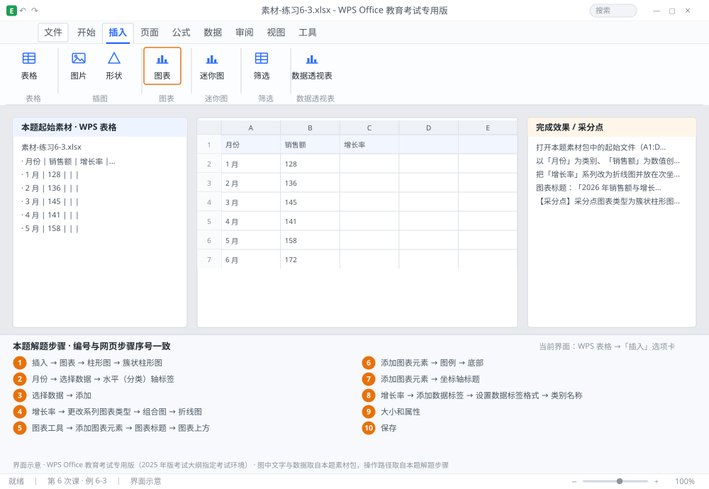

完成比对文档 · 例 6-3
柱形 + 折线次坐标轴：销售额与增长率双轴图 ｜ 第 6 次课 / WPS 表格 ｜ 网页：实操-表格3.html ｜ 考试环境：WPS Office 教育考试专用版（2025 年版考试大纲指定考试环境）
用途 本页按修订后的题目要求与解题步骤生成，是交卷自查的结果基准：
逐项列出每一步应出现的可复核结果，配合模拟操作截图与解题结果文件使用。
它不是素材包的一部分，不会预置答案动作；起始素材仍从本题素材包下载。
一、本题起始素材包
目录：练习素材/练习6-3-组合图表双轴/ ｜
下载包：练习素材/下载/练习6-3-组合图表双轴.zip
二、题目要求
- 打开本题素材包中的起始文件（A1:D13：月份、销售额、增长率）。
- 以「月份」为类别、「销售额」为数值创建簇状柱形图。
- 把「增长率」系列改为折线图并放在次坐标轴。
- 图表标题：「2026 年销售额与增长率」；图例放在底部。
- 添加坐标轴标题：主纵轴「销售额（万元）」，次纵轴「增长率」；横轴「月份」。
- 为增长率系列添加数据标签，显示百分比、1 位小数。
- 把图表移动到 F2 附近，大小设为 宽 12 厘米、高 8 厘米。
- 保存为 学号-姓名-练习6-3.xlsx。
三、解题步骤（编号与下方核对表、截图编号一致）
- 先选数据。选中 A1:C13（含表头与月份列）→「插入」→「图表」→「柱形图」→「簇状柱形图」→ 确定。
- 检查轴标签。横轴应是 1~12 月，若显示成 1、2、3…说明「月份」列没被识别为类别，右键 →「选择数据」→ 在「水平（分类）轴标签」里指定 A2:A13。
- 加增长率系列。右键图表 →「选择数据」→「添加」→ 系列名称选 C1、系列值选 C2:C13 → 确定。此时图上多出一组几乎贴地的柱子（因为增长率是小数）。
- 改次坐标轴（关键）。右键「增长率」系列 →「更改系列图表类型」→ 选「组合图」→ 增长率选「折线图」并勾选右侧「次坐标轴」→ 确定。
- 加标题。点图表 →「图表工具」→「添加图表元素」→「图表标题」→「图表上方」→ 输入「2026 年销售额与增长率」。
- 图例位置。「添加图表元素」→「图例」→「底部」。
- 坐标轴标题。「添加图表元素」→「坐标轴标题」→ 分别为主纵轴、次纵轴、横轴输入文字。
- 数据标签。右键「增长率」折线 →「添加数据标签」→ 再右键标签 →「设置数据标签格式」→ 勾选「类别名称」不需要、勾选「值」→ 数字 → 类别「百分比」、小数位数 1。
- 调整大小位置。拖动图表到 F2 附近 → 右键 →「大小和属性」→ 取消锁定纵横比 → 宽 12 厘米、高 8 厘米。
- 保存。Ctrl+S。
四、完成效果 / 采分点
采分点图表类型为簇状柱形图 · 增长率系列为折线且位于次坐标轴 · 图表标题文字完全一致 · 图例在底部 · 三个坐标轴标题齐全 · 增长率数据标签为百分比 1 位小数 · 图表尺寸为 12×8 厘米
五、逐项完成核对表
| 步骤 | 关键操作路径 | 应出现的结果（可复核） |
|---|
| 1 | 先选数据 | A1:C13、「插入」、「图表」、「柱形图」、「簇状柱形图」 |
| 2 | 检查轴标签 | 「月份」、「选择数据」、「水平（分类）轴标签」、A2:A13 |
| 3 | 加增长率系列 | 「选择数据」、「添加」、C1、C2:C13 |
| 4 | 改次坐标轴（关键） | 「增长率」、「更改系列图表类型」、「组合图」、「折线图」、「次坐标轴」 |
| 5 | 加标题 | 「图表工具」、「添加图表元素」、「图表标题」、「图表上方」、「2026 年销售额与增长率」 |
| 6 | 图例位置 | 「添加图表元素」、「图例」、「底部」 |
| 7 | 坐标轴标题 | 「添加图表元素」、「坐标轴标题」 |
| 8 | 数据标签 | 「增长率」、「添加数据标签」、「设置数据标签格式」、「类别名称」、「值」 |
| 9 | 调整大小位置 | F2、「大小和属性」、12 厘米、8 厘米 |
| 10 | 保存 | 保存 |
六、模拟操作截图

界面示意 · WPS Office 教育考试专用版 · 橙色编号与本题解题步骤序号一致；
图中文字与数据取自本题素材包，功能入口取自本题解题步骤。
核对方法：按网页解题步骤完成并另存自己的成稿后，逐行比对本表第 3 列的
参数、公式、区域、文件名与对象数量；再对照网页「完成效果 / 采分点」检查版式是否一致。